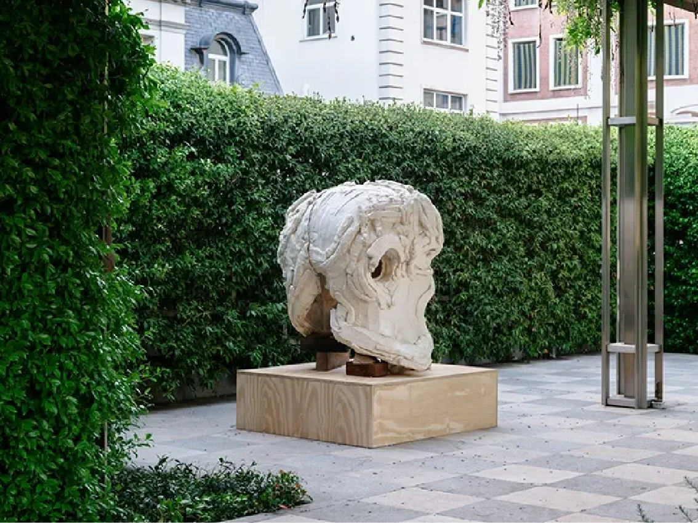
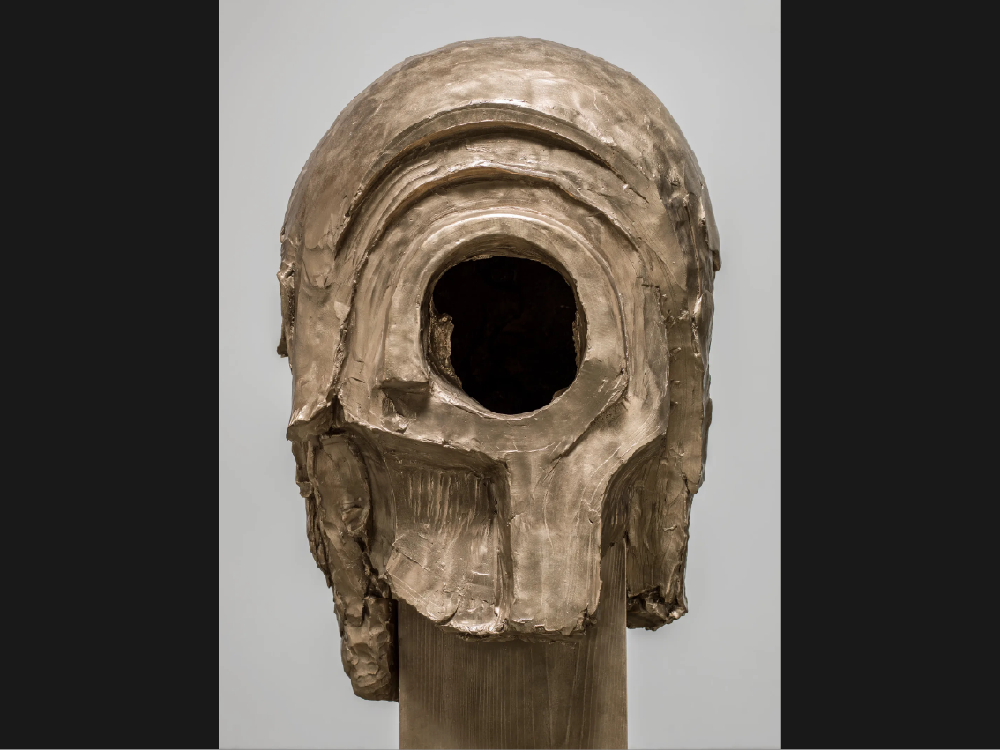
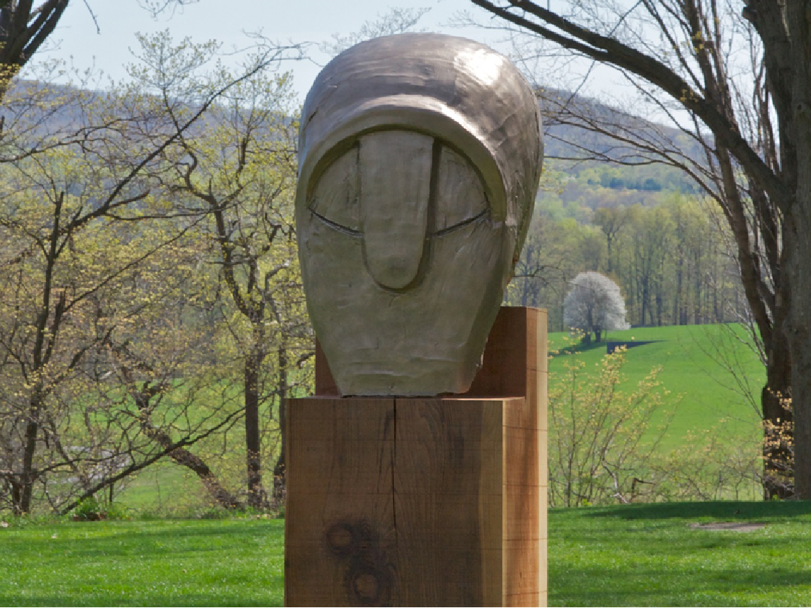

TODAS LAS OBRAS

Aluminium Construction N° 1 (Giant)
2008 · Aluminio fundido, base de acero

Moon Figure I
2010 · Tuf-cal, cáñamo, barras de refuerzo de hierro

Janus (Mirror figure)
2025 · Madera de secuoya, yeso y barras de refuerzo

Venice Head (Cave II)
2010 · Tuf-cal, cáñamo, barras de refuerzo de hierro, madera

Cave/Rock Head III
2011 · Bronce

Classical Head I
2010 · Bronce, madera

Large Walking Figure I (Leeds)
2013 · Bronce